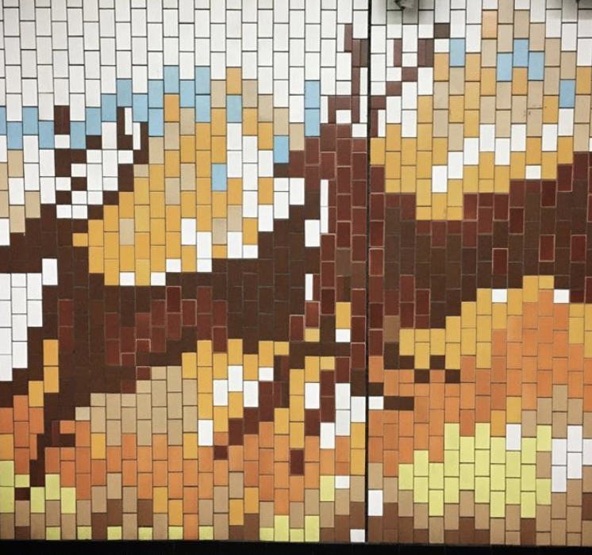

3호선
구파발역

역명의 유래
구파발이라는 지명은 조선 중기부터 공문서를 신속하게 전달하기 위한 파발역이 있었기 때문에 유래된 것입니다. 이 지역은 옛부터 경의가도의 길목이므로 덕수원이란 국립여관 외에 주막과 대장간이 즐비했었습니다.
디자인주제
구파발 정거장의 디자인 주제는 파발마로 하여 파발역이 있었던 지역의 특징을 부각시키고 벽면에는 산의 이미지를 추상화하여 북한산성이 인접한 정거장의 특징을 함께 나타내도록 하였습니다.